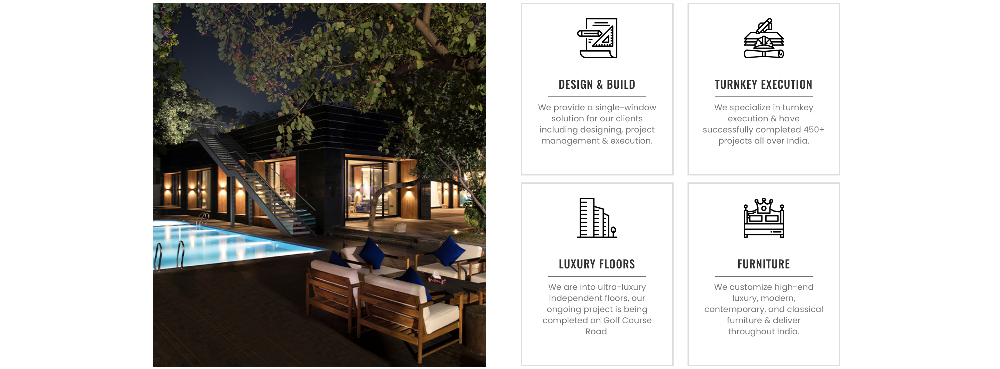
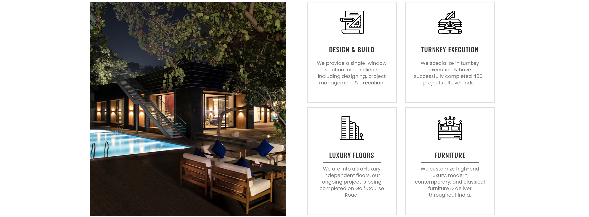

Who We Are?
With 16+ years of experience in architecture and interior designing, Design Symposium has a team of specialised, experienced, and farsighted professionals equipped to bring your dream homefrom paper to reality. Having the best interior designers and architects in the Delhi NCR region, we have completed over 450 projects across residential, hospitality, retail, and corporates in over 100 cities of the country so far. Creativity, integrity, time, and quality are the four pillars that we, at Design Symposium, abide by and stand on.
You have a seed of an idea? It is our pleasure and responsibility to bring that to reality with the help of trusted architects and interior designers who will give you the space and the home you had perfectly envisioned with their technical expertise. As a trusted interior and architectural design company across Delhi NCR, we take pride in serving dreams and helping you reach your goals!
 
